<!doctype html>
<html>
	<head>
		<meta charset="utf-8">
		<meta name="viewport" content="width=device-width, initial-scale=1.0, maximum-scale=1.0, user-scalable=no">

		<title>IDE</title>

		<link rel="stylesheet" href="../dist/reset.css">
		<link rel="stylesheet" href="../dist/reveal.css">
		<link rel="stylesheet" href="../dist/theme/beige.css" id="theme">

		<!-- Theme used for syntax highlighted code -->
		<link rel="stylesheet" href="../plugin/highlight/github.css" id="highlight-theme">
	</head>
	<body>
		<div class="reveal">
			<div class="slides">
                <section data-markdown data-separator="----" data-separator-vertical="---" > 
<script type="text/template">

## Install

---

### OpenJDK


---

### IDEA


---

### Project

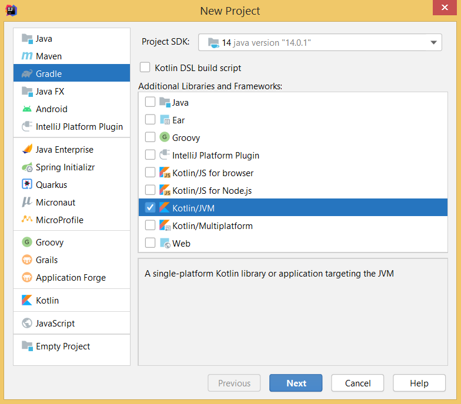

---

### Project properties


---

### Project is made

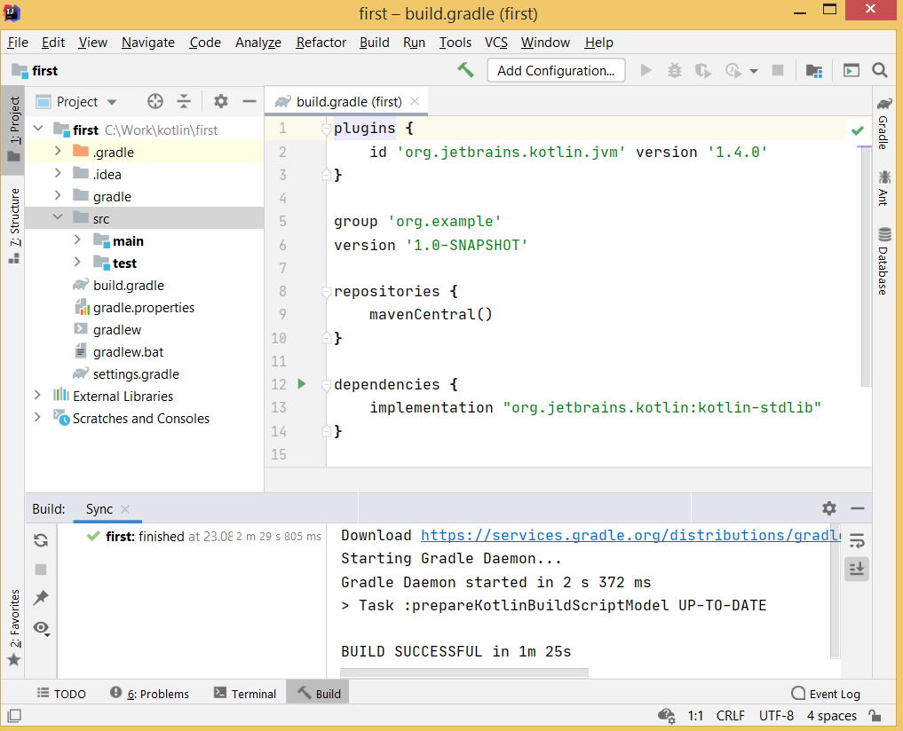

----

## Edit code

---

### Source file

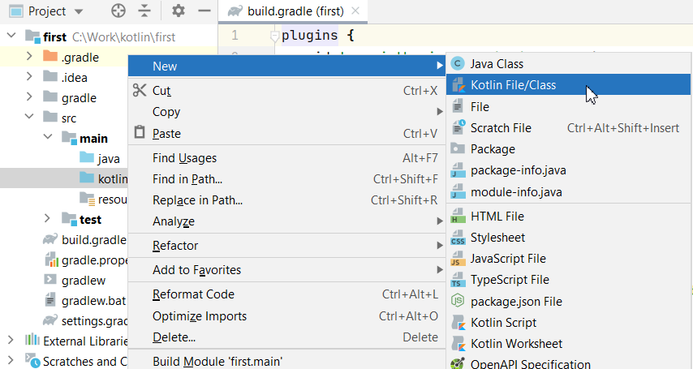
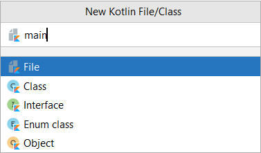

---

### Run program

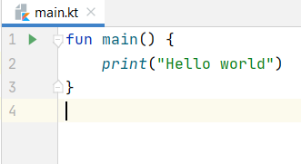
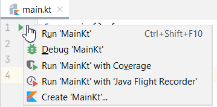
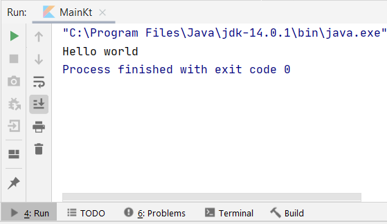

---

### Smart code completion


---

### Error hint

<table>
<tr>
<td>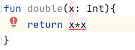</td>
<td>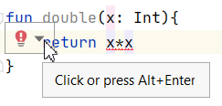</td>
</tr><tr>
<td>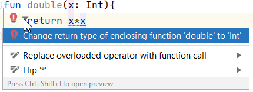</td>
<td>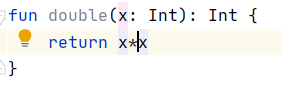</td>
</tr>
</table>

---

### Refactor

<table>
<tr>
<td>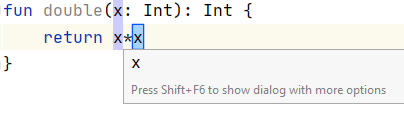</td>
<td>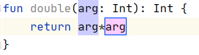</td>
</tr>
</table>

---

### Reformat

<table>
<tr>
<td>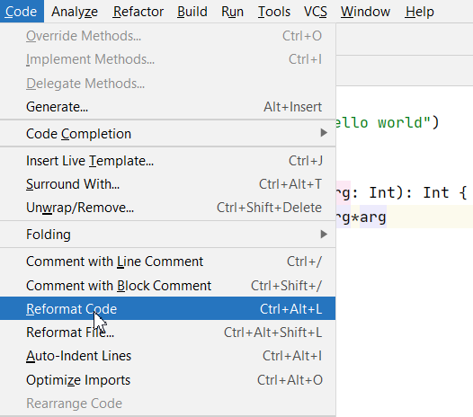</td>
<td>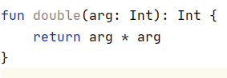</td>
</tr>
</table>

----

## Tests

---

### Create test

<table>
<tr>
<td>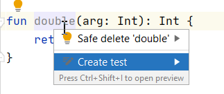</td>
<td>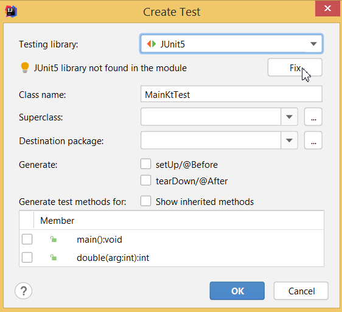</td>
</tr>
</table>

---

### build.gradle

```groovy{} 
dependencies {
    implementation "org.jetbrains.kotlin:kotlin-stdlib"
    implementation 'org.junit.jupiter:junit-jupiter:5.4.2'
}

test {
    useJUnitPlatform()
}
```

---

### Test class

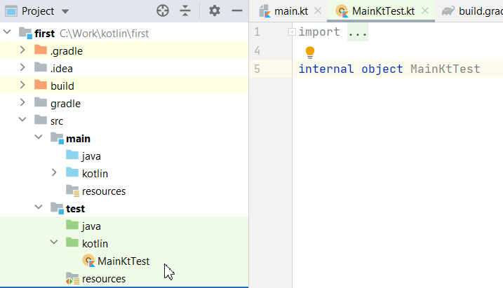

---

### Test code

```kotlin{}
import org.junit.jupiter.api.Test

internal class MainKtTest {

    @Test
    fun testDouble(){
        assert(double(2)==4)
    }
}
```

---

### Test result

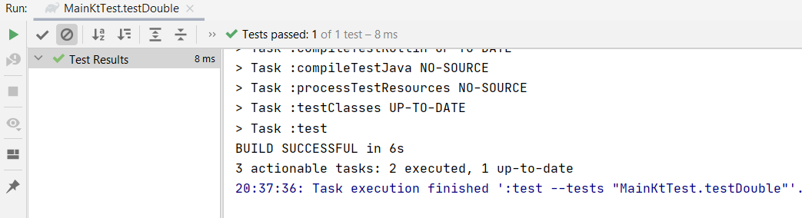

---

### Test error

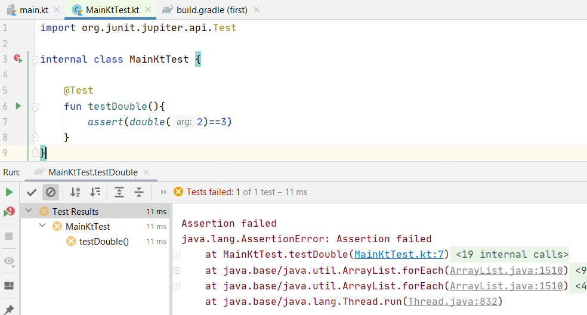

----

## Debug

---

### Function

```kotlin{}
fun factorial(n: Int): Int =
    if (n == 0)
        1
    else
        factorial(n - 1) * n
```

---

### Import libs fun

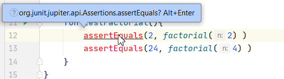


---

### Breakpoint

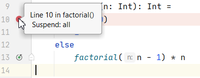

---

### Debug run

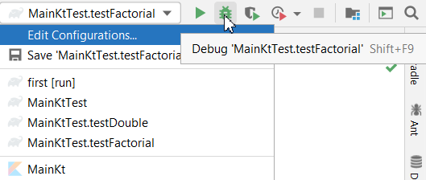


---

### Debug state

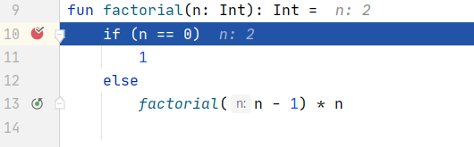

---

### Debug window

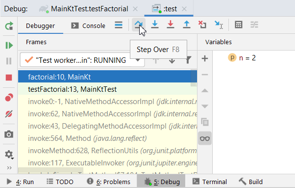


</script>
                </section>

			</div>
		</div>

		<script src="../dist/reveal.js"></script>
		<script src="../plugin/notes/notes.js"></script>
		<script src="../plugin/markdown/markdown.js"></script>
		<script src="../plugin/highlight/highlight.js"></script>
		<script src="../plugin/audio-slideshow/plugin.js"></script>
		<script src="../plugin/audio-slideshow/recorder.js"></script>
		<script src="../plugin/audio-slideshow/RecordRTC.js"></script>
		<script src="../plugin/menu/menu.js"></script>
		<script>
			// More info about initialization & config:
			// - https://revealjs.com/initialization/
			// - https://revealjs.com/config/
			Reveal.initialize({
				hash: true,

				// Learn about plugins: https://revealjs.com/plugins/
				plugins: [ RevealMarkdown, RevealHighlight, RevealNotes, RevealAudioSlideshow, RevealAudioRecorder, RevealMenu ],
				audio: {
					prefix: 'audio/',
					suffix: '.webm;codecs=opus',
					autoplay: false,
					advance: -1,
				},
				menu: {
					custom: [{
						title: 'Home',
						icon: '<i class="fa fa-home">',
						src: '../menu.html'
					}]
				}
			});
		</script>
	</body>
</html>
